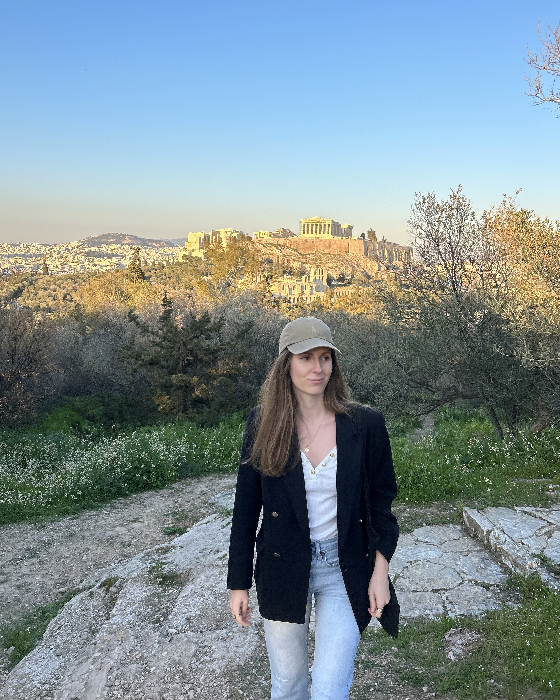
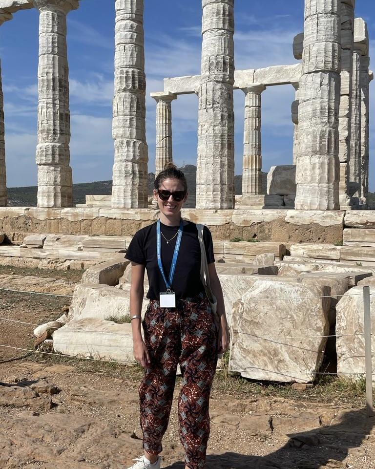
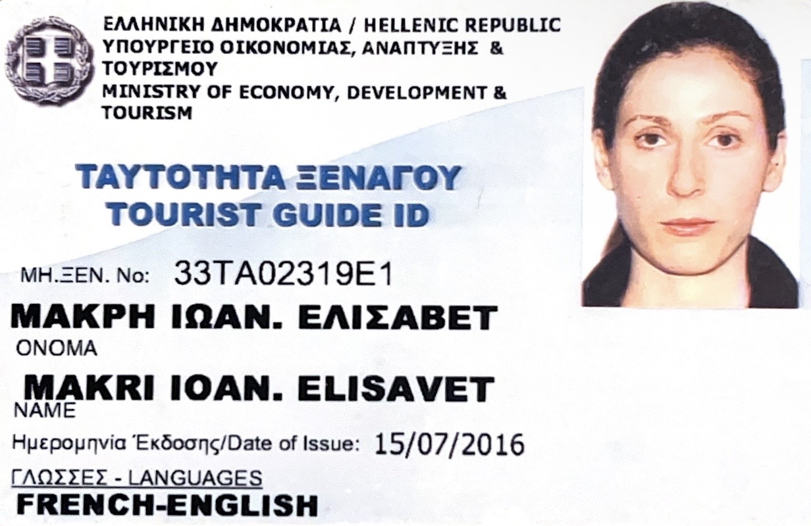

An officially licensed tourist guide since 2016, I conduct tours throughout Greece and in Athens, the city where I was born and raised. After completing my studies in History and Archaeology at the National and Kapodistrian University of Athens, I continued my education in France at Bordeaux Montaigne University (Management of Cultural Heritage), and at the Sorbonne-INHA Art Institute (Modern Art). Afterwards, I lived in France for eight years, gaining experience in art galleries, auction houses, and museums.


Licensed to guide in both Greece and France.
